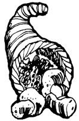
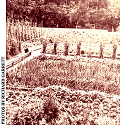
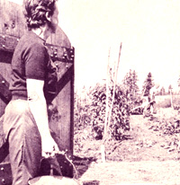
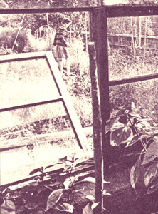
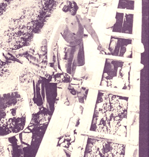
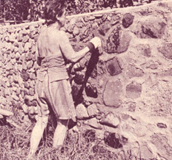

Excerpted by permission from the book, Living the Good Life, copyright 1954 by Helen Nearing and published by the Social Science Institute, Harborside, Maine. This book is now published by Schocken and should be available in either hard cover or paperback from any good bookstore ... or in paperback only ($2.50) from Mother's Bookshelf.
There's an old Spanish proverb which holds that, "The best revenge is to live well. " And if thats true, then Helen and Scott Nearing, (without ever having been vengeful at all) have had-and still have-the very best revenge of all.
Because the Nearings have lived quite well indeed in all the ways that really matter. And they have done it entirely on their own terms and at their own pace. And they have done it far longer (Helen is 74 and Scott is 93) than most of their detractors ever have or ever will.
The folks here in MOTHER's offices, of course, have long admired the Nearings' self-reliant, stand-up-for-what's-right, we'll-vote-with-our-lives way of living. As we said, in part, five years ago in our introduction to a Plowboy Interview with them (see The Plowboy Interview with Helen and Scott Nearing in MOTHER NO.11);
Helen and Scott Nearing have been living today's counterculture for better than a generation. Almost four decades ago (in 1932), the couple "dropped out" to a rockscrabble mountain farm in Vermont's Green Mountains where they spent the next 20 years rebuilding the soil, constructing solid homestead buildings from native stone, growing their own food, heating with wood they cut by hand, and co-authoring numerous books and magazine articles. Tick off any of the present's most "in" passions - women's lib, equal rights, organic gardening, vegetarianism, radicalism, homesteading, subsistence farming, ecology - and you'll find that the Nearings have been doing instead of talking for 40 years.
In 1952, when "developers" began despoiling the slopes around them for a ski resort, the Nearings sold their Vermont farm, moved to a remote Maine cape and began all over again ... clearing brush, building honest stone structures, planting vigorous gardens, and - in general - making their place in the world on a soul-satisfying, sweat-of-the-brow basis.
Helen and Scott Nearing - then - are hardworking, proud people who pay their dues, think for themselves, and stand on their own two feet ... exactly the kind of folks that "made this country great". Salt of the earth. Rugged individuals. People who stand up for what's right. The Great American Dream Couple. Folks who would be honored in every corner of this nation, well, yes and no. The Nearings most certainly have paid their dues and taken stand after lonely stand for their vision of right ... only to find that truth, justice, honor, decency - even simple rational thought - can be a highly suspicious commodity here in The Land Of The Free and The Home Of The Brave.
A pacifist, Scott was tried for sedition by the Federal Government for opposing U.S. entry into World War I. Acquitted by a jury, he was then blacklisted by the academic world for-among other things - his stand against child labor. His textbooks were even taken from the schools and he became a prophet without honor in his own country.
Of course, the U.S. Government and this country's academic circles have no monopoly on stupidity. Scott once joined the Communist Party ... only to be expelled for writing a book that took exception to Lenin's theories on imperialism. Nobody loves a freethinker.
Nobody, that is, unless the freethinker lives long enough to see his "wild-eyed, radical" theories become the staid, commonplace, taken-for-granted thoughts of a following generation. And that's exactly what has happened for Scott and Helen Nearing now, many times over. Scott and Helen have simply endured ... and the rest of us have slowly come around.
Still despite the fact that the Nearings were one of the original inspirations for THE Mother Earth News(restricted) and despite the fact that we've followed their work (and their lives) "from a distance", so to speak ... no one in MOTHER's home office had ever actually met Helen or Scott. Not that is, until a month or so ago ... when the couple spent a few days here in the mountains of North Carolina serving as judges on this magazine's Self-Sufficient Food Competition.
What a treat that was for us! If "the proof of the pudding is in the eating", then the validity of the Nearings' philosophy of life is just as surely radiated from Helen and Scott themselves. The Nearings, in short, are an incredible living, breathing, double-advertisement for the elegantly simple way of life they've chosen for themselves.
Now we all know a lot of somewhat older people that our society calls "successful". Folks whove spent their more vigorous years laboring in the industrial and business vineyards so that they could retire in their early or mid-60's. And, almost invariably, by the time these men and women have reached their late 60's (if they reach them at all) ... their physical mobility is noticeably restricted, they're on very familiar terms with one or more doctors, they've had operations, they don't steep well, they ache, they moan, they really aren't very happy, they fill their days with the pap on television, and they've largely lost interest in the larger questions of the day.
But not Helen and Scott Nearing! After flying into a local North Carolina airport from their present (hand-built by them!) homestead in Magnesia flight that would have tired most people half their ages-they immediately plunged into the work they had come down to do. And they kept on plunging (for full eight-hour days) during the next three days. And then spent several hours each evening knowledgeably discussing the important affairs of the world And inspecting a small mountain farm. And doing a lot of other things (believe it or not, Helen was even seen skipping down the street one day after buying a newspaper!) that folks their age "simply don't do"... or usually can't do.
To put it another Way: There's something going on here! The Nearings may not be right... but they sure as heck look to be a whole lot less wrong than most of the rest of the people in our society.
So what's their secret? How have the Nearings preserved their health so well for all these years? Why are they so serene and confident and happy? How have they managed to do what so many of us never manage to do?And how have they managed to do it so well?
Well, there's no big mystery to the success enjoyed by the Nearings. As a matter of fact, they wrote a book-Living the Good Lifetwenty-three years ago that bared all their secrets to the world Far too few of us, however, seem to have read that book... and those of us who did read it frequently seem to have forgotten just how good and sensible and valuable that manual is.
So here-for everyone who never got around to reading Living the Good Life in the first place ... and for everyone who did read it but never got around to putting its wealth of bedrock information into practice-is an excerpted cram course in some of the basics of Helen and Scott Nearing's way of life. Enjoy, enjoy. And then, if you're one of the more clever among us, you 'll want to get a copy of this most important book for your very own (available from any good bookstore or Mother's Bookshelf). And after that, if you're one of the very clever among us ... you'll probably begin to pattern your own life after the lives of this amazing couple!
We left the city with three objectives in mind.
The first was economic. We sought to make a depression-free living, as independent as possible of the commodity and labor markets, which could not be interfered with by employers, whether businessmen, politicians, or educational administrators.
Our second aim was hygienic. We wanted to maintain and improve our health. We knew that the pressures of city life were exacting, and we sought a simple basis of well-being where contact with the earth, and homegrown organic food, would play a large part.
Our third objective was social and ethical. We desired to liberate and dissociate ourselves, as much as possible, from the cruder forms of exploitation: the plunder of the planet; the slavery of man and beast; the slaughter of men in war, and of animals for food.
We were against the accumulation of profit and unearned income by non-producers, and we wanted to make our living with our own hands, yet with time and leisure for avocational pursuits.
Our search for the good life brought us face to face with several immediate questions: Where to live the good fife? How to finance the enterprise? And finally there was the central problem of how to live the good life once we had found the place and the economic means.
Where in the United States should we turn? We decided in favor of the Northeast, for various reasons.
Aesthetically, we enjoy the procession of the seasons. In any other part of the country we would have missed the perpetual surprises and delights to which New England weather treats its devotees.
Physically, we believe the changing weather cycle is good for health and adds a zest to life. We even enjoy the buffeting that comes with extreme winter cold.
Geographically, we found New England in closer contact with the Old World, from which we did not wish to sever connections.
We took our time, and during many months looked through the northeastern states. Finally we settled on Vermont. We liked the thickly forested hills which formed the Green Mountains. The valleys were cozy, the people unpretentious. Most of the state was open and wild, with little of the suburban or summer vacation atmosphere.
On a chill day in the autumn of 1932, we signed an agreement to buy a typical run-down farm, with a wooden house in poor repair, a good-sized barn with bad sills and a leaky roof, a Finnish bath-and 65 acres of land from which the timber had been cut. "Conveniences" consisted of a pump and a black iron sink in the kitchen and a shovel-out backhouse at one end of the woodshed. The place had a plenteous spring of excellent water, a meadow, a swamp or two, and some rough land facing south.
The first spring after we moved onto our little farm, the Hoard boys, who lived with their mother on the next place north of us, burned over their pastures. When they got down in our direction, we noted with alarm that their land ran to within about a dozen feet of our house and not much farther from our barn. The boys kept the fires under control that day, but the flames came too close for comfort.
We decided to ask Mercy Hoard to sell us a strip of land that would protect our house and barn from future pasture burnings. We found she wanted to move away and she then and there offered us her entire place with its down-at-the-heels buildings, its better-than-average sugarbush, and its decrepit sugarhouse.
The sugarbush, overgrown with softwood and thick with brush, was being sugared on shares by Floyd Hurd, his wife Zoe, and such of their eleven children as were big enough to lend a hand when sap began to run in the spring. We talked things over with Floyd and Zoe, and continued the original share arrangement.
Here was something on which we had not counted. In a syrup season lasting from four to eight weeks, owning only the maple trees, the sugarhouse, and some poor tools, and doing none of the work ... we got enough syrup to pay our taxes and insurance, to provide us with all the syrup we could use through the year, plenty to give away to our friends and to sell. We realized that if we worked at sugaring ourselves, syrup would meet our basic cash requirements This gave us hopes for a solid economic foundation under our Vermont project.
The finding of a spot in Vermont which appealed to our reason, enthusiasms, and pocketbooks answered our first question: where to live the good life. The possibility of sugaring for a living answered the second question: how to finance the good life. Our next job was to determine the way in which the good life was to be lived.
After due consideration and in the spirit of the times, we drew up a ten-year plan:
1. We wish to set up a semi-self-contained household unit, based largely on a use economy, and, as far as possible, independent of the price-profit economy which surrounds us.
We would attempt to carry on this self-subsistent economy by the following steps: [1] Raising as much of our own food as local soil and climatic conditions would permit. [2] Bartering our products for those which we could not or did not produce. [3] Using wood for fuel and cutting it ourselves. [4] Putting up our own buildings with stone and wood from the place, doing the work ourselves. [5] Making such implements as sleds, drays, stone-boats, gravel screens, ladders. [6] Holding down to the barest minimum the number of implements, tools, gadgets, and machines which we might buy from the assembly lines of big business. [7] If we had to have such machines for a few hours or days in a year (plow, tractor, rototiller, bulldozer, chain saw), we would rent or trade them from local people instead of buying and owning them.
2. We have no intention of making money, nor do we seek wages or profits. Rather we aim to earn a livelihood, as far as possible on a use economy basis. When enough bread-labor has been performed to secure the year's living, we will stop earning until the next crop season.
People brought up in a money economy are taught to believe in the importance of getting and keeping money. Time and again folk told us, "You can't afford to make syrup. You won't make any money that way."
Our attitude was quite different. We kept careful cost figures, but we never used them to determine whether we should or should not make syrup. We tapped our trees as each sap season came, along. When the season was over and the syrup on hand, we wrote to various correspondents in California or Florida, told them what our syrup had cost, and exchanged our product for equal value of their citrus, walnuts, olive oil, or raisins. As a result of these transactions, we laid in a supply of items, at no cash outlay, which we could not ourselves produce.
We also sold our syrup and sugar on the open market. In selling anything, we tried to determine exact costs and set our prices not in terms of what the traffic would bear but in terms of the costs, figuring in our own time at going day wages.
Just as each year we estimated the amount of garden produce needed for our food, so we tried to foresee the money required to meet our cash obligations. When we had the estimated needs, we raised no more crops and made no more money for that period. In a word, we were trying to make a livelihood, and once our needs in this direction were covered, we turned our efforts in other directions ... toward social activities, toward avocations such as reading, writing, music making, toward repairs or replacements of our equipment.
3. All of our operations will be kept on a cash and carry basis. No bank loans. No slavery to interest on mortgages, notes, and IOU's.
Under any economy, people who rent out money live on easy street without doing any productive labor. It is the borrowing producers who pay the interest or lose their property. Farmers and homeowners by the thousands lost everything they had during the Great Depression because they could not meet interest payments. We decided to buy for cash or not at all.
4. We will make our cash crop from maple syrup and will work out a cooperative arrangement wherever possible.
We made a cooperative agreement with Floyd Hurd and his family under which we would work together and divide the syrup crop in proportion to land and tools owned and the work done by each party. We began this arrangement in 1935 and continued it for six years with the Hurds, later carrying it on with other people.
5. We will put syrup production on an efficient basis, replace the old Hoard sugarhouse with a modern building and equip it with new tools.
We did this in 1935, we building the new sugarhouse and the Hurds buying a large, new evaporator. We also decided to convert part of our syrup crop into maple sugar, for which there was a ready sale.
6. So long as the income from the sale of maple syrup and sugar covers our needs we will not sell anything else from the place. Any garden or other surpluses will be shared with neighbors and friends in terms of their needs.
This latter practice was carried out generally in the valley. Rix Knight had extra pear trees. In a good season he distributed bushels to any of us who had no pears. Jack Lightfoot let us pick his spare apples and let others cut Christmas greens, free of charge. We brought firewood to those who needed it, and many garden products.
7. We will keep no animals.
We believe that all life is to be respected ... non-human as wen as human. Therefore, for sport we neither hunt nor fish, nor do we feed on animals. Furthermore, we prefer, in our respect for life, not to enslave or exploit our fellow creatures.
We thus escape the servitude and dependence which tie both farmer and animal together. The old proverb "No man is free who has a servant" could well read "No man is free who has an animal." Many a farmer, grown accustomed to his animal-tending chores and to raising food for animals instead of for himself, could thus find his worktime cut in half.
8. We will not waste time making over old buildings. We will use them as long as necessary, repair them if we must, but in general we realize they are on the skids. If they have no function, we will tear them down at the first opportunity. Only if they are useful and necessary, will we replace them.
Some of our friends and neighbors cry out in protest: "But the lines on these old houses!" Our answer is simple, and in three parts: [1] If we are worth a snap of the fingers, we can build with lines as good or better than our great-grandfathers. If we cannot, we do not deserve to live in a well-designed house. [2] The refurbishing of an old building will often cost as much, and sometimes more, in time and money than the construction of a new one. [3]
When you get all through with the old building you still have an old framework, which means old and often rotten sills, studs, plates, floor joists, and rafters. Corners or lines may never be square or true. and the style and planning are not really custom-fitted to the modern occupant.
9. We will pick out the sites for a permanent house and other necessary buildings, and for gardens which can be terraced for drainage during wet seasons and can be irrigated in dry spells.
10. We will build of natural stone and rock. This can be done most efficiently by gathering the materials long beforehand. We will sort all stone that we have to move, establish piles for wall stones, corner stones, chimney stones, floor stones, terrace stones, and fireplace stones to prepare for the years when we can build.
We set aside a convenient locality, out of the way of building or hauling, but handy to our site. We put up rough signboards labeled "Corner", for stones having one 90° angle, "Blue Ribbon", for those having a good flat face; "Floor", for thin, large rocks having a smooth flat surface; "Chimney", for regular blocks, with well-set corners if possible; and "Uglies", for just plain stone, of odd sizes and shapes, which could be used for foundations or for fillers. Stone gathering became a real preoccupation on our walks or drives, and it was a rare day when we did not come back "with stone in hand".
11. First among the new buildings to be erected in our construction program will be a lumber shed where our green lum her can be stored and dried under the best conditions. This will give us air-dried lumber when we come to build.
As it turned out, our supply of lumber put in the shed in 1933-36, provided us during the years from 1938-43 (when we did most of our building), with $25 lumber at a time when the same lumber, green at the mill, was hard to get at $125 per thousand feet.
12, Since building with concrete requires sand and gravel, we will need a dependable source of good gravel and sand.
These twelve points were the essentials of our ten-year plan ... the items in our card catalog. They made up the Constitution of our household organization. We also drew up bylaws of household procedure, the first of which called for order.
We were planning a functioning homestead, not a business; nevertheless we tried to be as systematic as though we were handling a large-scale economic project. Our card index of activities had a place for "jobs to be done" (divided into "clear weather jobs" and "rainy day jobs"), for "construction planned", and for "finished projects". Each project had its cost cards with records of materials used and money outlay for specific purposes. Separate loose-leaf books for gardening and sugaring contained the plans, current activity reports, and records from previous years.
Some of our readers will feel that such a life pattern is over organized. They would not wish to plan their activities so completely. After having tried it out, day after day, and year after year, we know it is the way to get things done. Two people can accomplish much in a day or a month or a year if they have defined objectives, agreed plans, and if they work on the program systematically and conscientiously, giving as much attention to details as to the over-all plan.
During the autumn months, as we gave the gravel pit a final once-over, inspected the sap pipelines, swept out the tool shed, sowed rye in the big garden, stored the root vegetables and the apples, and put the snow-stakes along the road and beside the culverts, we asked ourselves: "Well, what is our project for next year? "
In the course of weeks or months, we talked over various possibilities, decided between them, put our decisions on paper, drew our plans, filed them in the appropriate place, and were ready well ahead of time to start on them when spring came. If we found we were short of lumber for some building operation, we cut logs during the winter, put them on skids, and sent them to the mill as soon as roads hardened up in the spring. We aimed to keep our lumber shed full of miscellaneous pieces for odd jobs or big projects.
Our woodsheds, too, were filled ahead of time. We considered dry wood under cover better than money in the bank. Our inventories for the sugar business were kept well filled so that needs were anticipated and crises due to lack of essential materials were avoided. When we had money, we put it into building. If we could not finish a building one year, we stopped at a planned point and finished it the next year.
In order to carry out our various plans we had to use a certain amount of self-discipline, and expected it of those who lived with us.
Each day was divided into two main blocks of time: four morning hours and four afternoon hours. At breakfast time on weekdays we first looked at the weather, then asked, "How shall we arrange the day?"
Suppose that the morning was assigned for bread-labor. We then agreed upon the tasks that each member of the group should take on ... in the garden, in the woods, on construction, in the shop, at sugarmaking or packing. If one's bread-labor was performed in the morning, the afternoon automatically became personally directed. One might read, write, sit in the sun, walk in the woods, play music, go to town. We earned our four hours of leisure by our four hours of labor.
On Sundays we varied our schedule by having no schedule and by doing no regular bread-labor. Usually there was a period of music Sunday morning and often a group discussion Sunday evenings. Other evenings there was a period of reading aloud by someone while the others cracked nuts, shelled beans, or did some personal chore like darning or knitting. We adhered generally to this daily and weekly routine, but not fanatically. However, unless there was a good and sufficient reason, we did not depart from it.
Each person on our project also took vacations ... blocks of time ranging from weeks to months, which were set off against equal periods of bread-labor time. We talked these matters over well in advance, arranging the vacation schedules in a way that made sense in terms of work urgency on one side and personal preference on the other. Our aim was to get a year's livelihood in return for half a year of bread-labor. We were quite flexible in arranging the details. Occasionally we would work steadily for months and then take off months away from work.
There is another very important point to remember about our projects. We were not in a hurry, except occasionally when it threatened to shower or when sap buckets were running over, or on special Christmas rush orders. All such emergencies we tried to anticipate as much as possible, in order to avoid haste, which according to the old saying, results in waste. We took our time, every day, every month, every year. We had our work, did it and enjoyed it. We had our leisure, used it and enjoyed that. During the hours of bread-labor we worked and worked hard. We have never worked harder and have never enjoyed work more, because-with rare exceptions-the work was significant, self-directed, constructive: and therefore interesting.
During the time we were in Vermont we put up twelve major buildings and many minor constructions. None was of wood, one was entirely concrete, and two were metal sugarhouses. Five of the stone buildings were grouped functionally around the central dwelling house.
Each spring we made syrup and planted a garden. It was June before we could devote time to building. Four or five months later, heavy frosts ended concrete and stone work for the season. When we made our original construction plans we estimated that the building project would cover about ten years. It was eleven years before we completed our entire building program. We had not rushed. We worked at it when we could and were satisfied if we kept moving toward our goal.
Our experience leads us to believe that people of moderate intelligence, little experience, and slender means can build with stone if they have the time, patience, and the inclination. Once the stone building is in place, it becomes a thing of beauty and lasts indefinitely. Stone construction takes time, but tested by results, it is time well-spent. In any case, here is one way in which a selfsufficient homestead can be established and strengthened.
For years we put nothing on our garden except compost. We fed the soil live food ... not dead, inert, synthetic or artificial fertilizers. The resulting garden produce was superb in quality, abundant, and of splendid color and flavor. And year by year we added to the volume of topsoil as well as to its friability and productivity.
We seldom bought anything out of season, such as asparagus, strawberries, or corn. Instead, we enjoyed thoroughly each food as it came from the garden. We began early in the spring with parsnips, the first thing available in our garden. As soon as the snow went, we dug them and had them for one meal a day for about three or four weeks. During that period they provided much of our starch and sugar. With parsnips went salsify, celery and parsley root leeks, and chicory.
Then came six to eight weeks of asparagus, accompanied by dandelion, chives, and multiplier onions. Before the asparagus was finished, we had begun on spinach, radishes, mustard greens, garden cress, and early lettuce. Following that we had green peas, beets, standard lettuce, string beans, and squash.
In the height of the season came corn, tomatoes, shell beans, broccoli, cauliflower, and celery. As autumn approached, we turned to the cabbages, winter squash, turnips, rutabagas, carrots, escarole, Chinese cabbage, collards, with cos lettuce, fall radishes, spinach, and beets, and, for the first time, potatoes and dried beans.
We cultivated strawberries, raspberries, and blueberries and ate them in season. These berries also grew wild in abundance, along with chokecherries, shad, and blackberries. For other fruit we had pears, plums, and apples.
After the snows, when the gardens were white and frozen, we turned to our vegetable cellars with their winter roots, cabbages, winter squash, potatoes, beets, carrots, turnips, onions, rutabagas, celery root, parsley root, and pears and apples. The hardiest of these vegetables would still be fresh and edible up to the time the snow melted and we were digging parsnips once again.
Through this entire twelve-month cycle, we ate a great variety of fresh food. It was garden fresh from the first thaw in FebruaryMarch to the heavy snows of December. The balance of the time it came from an outside vegetable cellar. By following the seasons, we got a succession of foods ... each at its peak. We enjoyed each in turn. We tired of none, but always looked forward to its coming in the new growing season.
Early spring gardens are made by wintering over leeks, chives, multiplier onions, dandelions, parsley, collards, chicory, removing the protecting brush and mulch when heavy frosts are ended and letting the sun bring them along. This gives one mature vegetables even before seed-planting time. Another help for the spring garden is a small, portable cold frame, made with a few boards and some window sash or cold frame sash, in which early radishes, lettuce, cress, and mustard greens may be sown. Under favorable conditions radishes mature in three to four weeks. They are hardy and will stand some freezing,
Fall gardens grow out of summer gardens. About July 1st, as we removed radishes, lettuce, early beets, and spinach from the garden, we scattered an inch of compost, worked it in, and planted onion seed, beets, escarole, endive, broccoli, Chinese cabbage, kale, collards, A little later we planted oak leaf lettuce, cos lettuce, wint er celery plants, spinach, and finally mustard greens, garden cress, and radishes. We did our last planting late in September or early in October.
When our cucumbers, squash, peppers, and tomatoes froze, we replaced them with transplants of lettuce, escarole, broccoli, and kale, and with sowings of mustard, cress, and radishes. On October 1st our garden was prolific, and greener than it was in August, because it was a greenness which is associated with autumn rains, night frosts, and hot, humid, and misty days. Insect pests had left for parts unknown. With the protection of a few evergreen boughs and some mulching with leaves, hay, or straw, these green crops were available until they were covered by heavy snow. If the first snow was wet, frozen brussels sprouts, collards, escarole, Chinese cabbage, kale, and parsley might be dug from under the snow blanket. At no other season are greens so delicious.
We further extended our growing season by a small sun-heated greenhouse in which we wintered many plants and started others for spring planting. The south wall of our tool shed was 18 feet long ... just enough to accommodate six cold frame sash, 3 X 6 feet. The tool shed, like all of our buildings, was made of stone. This gave us a south-facing stone wall against which we built a concrete and wood structure that held the six cold frame sash in a semi-horizontal position. On mild, sunny days in winter, with no stove or artificial heating, the temperature inside this sun-heated greenhouse went up to 100° unless we ventilated it.
We designed the place for raising celery, tomato, lettuce, and other transplants for the garden. One October. however, we set out oak leaf lettuce plants, six inches apart. The lettuce had been sown outside early in September and transplanted to the pit greenhouse in mid-October; thus it had been hardened by early frosts. We continued to eat this lettuce until January 5th, and felt richly rewarded for our pains. We had almost bridged the winter gap in garden-fresh vegetables. We had not dreamed that lettuce would last so long in an unheated greenhouse under sub-zero weather conditions.
The next autumn we cleared two inches of soil from the back bench, replaced it by two inches of good compost, worked it lightly into the undersoil, and set out eighty-eight heads of oak leaf lettuce plants from the garden. They were then about two inches high. As the plants grew, we scattered leaves among them to pro tect the roots against frost. We lost only two of the lettuce plants. The remainder we ate through the winter ... the last of them the following May. On two occasions that winter the thermometer touched 25° below zero.
The winter after that we tried Simpson lettuce instead of oak leaf, with no leaves for mulch. Same result: lettuce until May. At the same time we included chives and parsley plants that had been growing all summer in the garden. These were equally successful. We had found an all-winter source of fresh greens. Had the greenhouse been roomy enough, we believe that we could have grown mustard greens, garden cress, leaf chicory, and turnip greens all winter with equal success.
For a large part of the winter the top and sides of this unheated greenhouse were covered with snow. With the sun blocked from entering and the temperature down to 250 below zero we often found the lettuce frozen stiff. When cut under these conditions, it wilted immediately upon being brought into the house. Even plunging in cold water failed to revive it. However, if we left it uncut and waited for a warmer day or a bit of sun, the lettuce thawed out itself and stood in the greenhouse, crisp and edible.
The food we produced organically during the regular May to October growing season kept us in good health. Then came the next question, how to make this fresh, delicious, health-giving food available throughout the year without benefit of icebox, refrigerator, or freezing unit.
We finally decided upon root-cellar storage. In the course of our building, we made three cellars. The first one was under the kitchen of the main house. We dug it as we built the house and designed it to hold maple syrup, preserves, juices, and the fruits and vegetables in current use. It was never cold enough for permanent storage because it was separated from the kitchen by nothing more than a double wooden floor.
Our permanent vegetable storage unit was the cellar under the workshop, which later became the guesthouse. Fires were lighted in the room above this cellar only occasionally. The temperature there went to 20° Fahrenheit or lower during the frostiest nights of winter. The cellar had a spring which flowed from under a ledge. This running water helped to keep the temperature equable and the air moist. The floor we made of coarse gravel, allowing free flow of water and yet complete drainage.
We equipped this cellar with shelves and storage bins, a foot deep and about three feet wide. Into these storage bins we dumped quantities of maple leaves, gathered when they first fell in the autumn before they became dry and dirty. Root vegetables and fruit were packed away in these leaves ... first a generous layer of leaves, then a layer of vegetables. then more leaves and more vegetables until the bins were filled. On the top layer we put several inches of leaves.
The plan worked well. Whenever we wanted potatoes, carrots, beets, turnips, celery root. or apples, we brushed away the top leaves and picked out the firm, crisp garden products. The leaves held off frost and at the same time kept the air from evaporating the juices from the vegetables and fruit. Almost every year we ate carrots, beets, onions, turnips, rutabagas, potatoes, and apples from this cellar up to the July following the autumn in which they were stored. Many of these garden products lasted over into August.
Having found that our root cellar was too damp for cabbage, we built another type of storage cellar on higher land and with an earth floor, under the toolshed and back of the greenhouse. We strung a scaffolding of boards around the inside of this concrete cellar,, drove in nails at intervals of a foot, pulled our cabbage up by the roots, and hung them with strings, upside down, around the cellar walls, no two cabbages touching. With that arrangement we managed to keep cabbage until the following May.
We also used this cellar for storing celery, celery root, and parsley root ... pulling them on a wet September or October day before heavy frost, when plenty of earth would cling to the roots, placing four or five heads in an old sap bucket with a leaky bottom (for air circulation), and packing the buckets side by side on the earth floor of the cellar.
Under fair conditions the celery would last for two months. If we took it from the garden just before the first heavy frost, we had our own celery on the table at Christmas and New Year's. Curly endive, escarole, and Chinese cabbage, similarly treated, kept fresh and good up to eight weeks. Witloof chicory roots we put in old sap buckets, covered them with earth, and had chicory greens growing through the winter. With a little care, chives and parsley plants were kept growing until spring. Winter squash also kept in this cellar, though a dry, not too cool/not too warm attic is superior for the purpose.
By these various methods of storage we provided a year-round supply of fresh food. To be sure, during the depths of the Vermont winter it was not garden fresh, but-supplemented by greens from our sun-heated greenhouse-it gave us a satisfying and dependable supply of whole unprocessed foods. In most parts of the United States weather conditions are less severe than they are in the Green Mountains, consequently such procedures could be made even more effective.
Another source of winter greens, and a very important one, should be mentioned in passing: sprouted seeds. Asians have used sprouted mung beans successfully. Poultry growers sprout oats for their flocks. We sprouted mung beans, soybeans, peas, and wheat successfully. The sprouts may be eaten in salads, thrown raw into soups, Chinese fashion, or prepared in any other desired way for the table.
We dried aromatic herbs from our garden-basil, sage, thyme, summer savory, marjoram, parsley, and celery leaves-all of which go well with winter salads and soups. Chamomile, peppermint, spearmint, raspberry, and strawberry leaves we dried for tea. We hung the sprays in small bundles over our kitchen stove and when dead dry, crumbled the leaves and stored them away in jars
We aimed to keep our diet at fifty percent fruit, thiry-five percent vegetables, ten percent protein and starch, and five percent fat. The kind of fruits varied with the season. Its proportion of the total diet remained substantially the same. Of the vegetables we tried to have one-third green and leafy, one-third yellow, and onethird juicy. This ensured us a rounded quota of essential nutritives. In the summer, fruits and succulent vegetables were at least three-quarters of our dietary ... in winter perhaps a third to a half.
Our protein came from nuts, beans, olives, and the proteins contained in vegetables and in cereal grains and seeds. We believe that a far smaller amount of protein is necessary and healthful than usually advocated. The craving for concentrated protein foods is an acquired and a dangerous habit, in that it overenergizes the human organism and overloads the system with acid-forming elements.
Our fats were derived from vegetable oils ... olive, soy, corn, peanut, or sunflower. We have a high opinion of the efficacy of olive oil. Avocado pears are also an important source of vegetable fat for people living on the vegetarian diet.
Apply to vegetables and fruit the principles of wholeness, rawness, garden freshness, and one or few things at a meal, and you have the theory of our simple diet. In practice, the theory gave us a formulated regime: fruit for breakfast; soup and cereal for lunch; salad and vegetables for supper.
This fruit breakfast did not include the usual small glass of orange juice, a spoonful or two of berries or prunes or a dab of applesauce in a bowl with cornflakes or puffed wheat followed by toast and coffee.
Our breakfast was fruit. Fruit alone and plenty of it. It might be strawberry, raspberry, blackberry, or blueberry season; we picked the berries in the woods or garden and ate them, perhaps half a quart to a person. Melons and peaches were eaten when in season. Bananas, raisins, oranges, and dates were bought in the periods our local fruit gave out. Apples were the perennial staple as we had plenty of them on the place and they kept well all winter. Apples are a fine food, highly alkaline and extremely rich in iron and other important minerals. We often had a one-day exclusive apple diet to revivify and cleanse the system.
Oranges we did not juice, but cut in sixths, longways, and ate like watermelons, down to the peel. Gourmets amongst us dipped whole bananas in honey and then in wheat germ. Quarter sections of apples were dipped the same way, or spread with peanut butter. Nuts were often cracked and eaten with the apples. Berries were served with maple syrup or honey, or eaten dry. Breakfast was rounded out by a handful of sunflower seeds, herb tea sweetened with honey, or a tablespoon of blackstrap molasses in hot water.
Another fruit-derived breakfast item which deserves more than passing mention is rose-hip or rose-apple extract, which we often added to our molasses or our mint tea. Rose hips are an important source of vitamin C, containing on the average thirty times as much as fresh orange juice. "Some species," says Adelle Davis, "have been found to contain 96 times the vitamin C content of citrus juices." Her cookbook gives methods (which we used) of drying and preserving the rose fruit. Our attention was first called to rose-hip juice when a neighbor, Lois Smith, prepared a supply one autumn and fed a tablespoon per day to Marshall and the youngsters. It cleared up their colds like magic.
People may feel that such a "light" breakfast would not stand by a working man or woman till noon. That is largely a matter of habit. We have gone for months at a time with no breakfast at all and maintained health and suffered no discomfort though carrying on a full program of work. For ten years we have eaten fruit for our first meal of the day, and yet put in four solid hours at hard physical or mental work until lunch. We felt better, worked better, and lived better on it than after a stuffy starch- and protein-rich breakfast.
Lunch was ever the same and ever different: a soup and some sort of cereal. The soup was always vegetable but the ingredients varied from day to day, one vegetable usually predominating: potatoes, cabbage , carrots, tomatoes, onion, parsley, celery, beans, peas, beets, or corn. We added dried herbs and sea salt for seasoning. Occasionally barley, soybean meal, oats, or rice were included. At this mealtime we ate all the cereal for the day: wheat seed, buckwheat, or millet. These we bought in bulk (anywhere up to a hundred-pound bag from local feed stores) and stored in tin ashcans. We soaked a few handfuls of seeds overnight, and the next day either baked them in the oven with occasional basting of water, or cooked them slowly on top of the stove in a double boiler. The grains swelled to double their original size and were delicious and nutty eaten either hot or cold, with oil or butter and vegetable salt, with homemade jam or syrup, or with a peanut-butter-honey emulsion. Two bowls of soup and all the whole grain one wanted was a man's meal and lasted well till suppertime.
Raised bread we never baked and seldom bought. We got the same or better nourishment (and far cheaper) from the whole seed grain unprocessed. Occasionally we made corncob shaped "journey cakes" with coarsely ground whole grains, cornmeal, rolled wheat and oats, sweetened with maple syrup or molasses and moistened with soup stock and peanut butter or oil. After making carrot juice, the remaining pulp sometimes formed the base for these tiny loaves, which were baked to a brown crustiness and eaten with our noon meal or taken on trips.
The main dish for supper was a really large salad, enough to provide at least one overflowing bowl for each person. This salad was fruit or vegetable, depending on the garden resources. In a big wooden bowl we emulsified lemon or lime juice with rose-hip juice and olive oil, and into that cut peppers, celery, onion, radish, parsley, tomatoes, cucumbers, lettuce ... whatever was growing in the garden at the time. Sometimes we shredded raw beet, carrot, squash, celery root, and turnip and made that a complete salad, with celery, nuts and raisins, lemon and oil. In winter, white or red cabbage was the bulk item instead of lettuce. To this we added cut up apples, nuts, oranges or grapefruit, and celery. In summer we could add raw young peas, tips of asparagus, or fresh raw corn. We picked these salads just before making, and made them just before eating them. Thus the full vitamin content was retained.
In winter, before washing and cutting up the salad materials at suppertime, we put on potatoes or squash to bake. Squash, as well as potatoes, we baked whole, in the skin. The steam generated inside the skin tenderized the vegetables in record time and helped retain all the natural food values. When corn, asparagus, peas, or beans were ripe in the garden we added them to our evening meal, cooking as short a time as possible, in as little water as possible.
These food habits of ours we found simple, economical, and practicable, though they were perhaps not usual for 20th century Americans.
With advancing civilization, the American diet pattern, like everything else, has undergone a thoroughgoing change. The business of procuring the necessities of life has been shifted from the woodlot, the garden, the kitchen, and the family to the factory and the large-scale enterprise. In our case, we moved our center back to the land. There we raised the food we ate. We found it sufficient, delicious, and nourishing.
On this diet we maintained a rugged health and patronized no doctors. Our "apothecary shop was the woods and fields". "By attention to Diet, many diseases may be prevented, and others mitigated. It is a just observation that he who lives by rule and wholesome diet is a physician to himself." With vegetables, fruits, nuts, and cereals we proved that one could maintain a healthy body as an operating base for a sane mind and a purposeful harmless life.
Current practice in United States economy calls upon the person who has met his needs for necessaries to turn his attention forthwith to procuring comforts and conveniences, and after that to luxuries and superfluities. Only by such procedures can an economy based on profit accumulation hope to achieve the expansion needed to absorb additional profits and pay a return to those investing in the new industries.
Our practice was almost the exact opposite of the current one. Our consumer necessaries came mostly from the place, on a use basis. Comforts and conveniences came from outside the farm and had to be procured either by barter or through cash outlays. We bartered for some products ... chiefly food which we could not raise in a New England climate. Cash outlay meant earning additional cash income. Consequently, we endeavored to do as Robert Louis Stevenson advised in his Christmas Sermon, "Earn a little and spend a little less."
Food from the garden and wood from the forest were the product of our own time and labor. We paid no rent. Taxes were reasonable. We bought no candy, pastries, meats, soft drinks, alcohol, tea, coffee, or tobacco. These seemingly minor items mount up and occupy a large place in the ordinary family's budget. We spent little on clothes and knickknacks. We lighted for fifteen years with kerosene and candles. We never had a telephone or radio. Most of our furniture was built in and handmade. We did our trading in town not more than twice in a month, and then our purchases were scanty.
"Civilization," said Mark Twain, "is a limitless multiplication of unnecessary necessaries." A market economy seeks by ballyhoo to bamboozle consumers into buying things they neither need nor want, thus compelling them to sell their labor power as a means of paying for their purchases. Since our aim was liberation from the exploitation accompanying the sale of labor power, we were as wary of market lures as a wise mouse is wary of other traps.
Readers may label such a policy as painfully austere, renunciatory, or bordering on deliberate self-punishment. We had no such feeling. Coming from New York City, with its extravagant displays of non-essentials and its extensive wastes of everything from food and capital goods to time and energy, we were surprised and delighted to find how much of the city clutter and waste we could toss overboard.
We felt as free, in this respect, as a caged wild bird who finds himself once more on the wing. The demands and requirements which weigh upon city consumers no longer restricted us. To the extent that we were able to meet our consumer needs in our own way and in our own good time, we had freed ourselves from dependence upon the market economy.
Economically the successes achieved in the working out of the Vermont project far outweighed the failures. First and foremost, our idea of a subsistence homestead economy proved easy of realization. In exchange for, a few months per year of carefully planned bread-labor, we were able to provide ourselves with the bulk of our year's food. A few weeks of work furnished our house fuel. Another few weeks provided the needed repairs and replacements on buildings, tools, and equipment. Capital replacement of housing (new stone buildings for old wooden ones) was a more extensive task, involving considerable outlays of planning, time, energy, persistence, materials, and capital. Once a stone building was in place, however, the yearly cost of repairs and replacements fell almost to zero.
With this provision of necessaries went an unbelievable degree of good health, which is a matter of primary importance to people aiming at economic self-sufficiency on the one hand and social reconstruction on the other. Literally, we were always well, and on the rare occasions when the approaches of a cold appeared temporarily to lower our vitality, we followed the accepted practice of the cats and dogs of the neighborhood, and stopped eating until we felt fit.
Life's necessaries are easily come by if people are willing to adjust their consumption to the quantity and variety of their products. Difficulties begin when the subsistence advocate enters the market with its lures and wiles for separating the unwary and the dull-witted from their medium of exchange.
Never forget that from the private ownership of the means of production, through the monopoly of natural resources and patents, the control over money, the imposition of the tribute called "interest", the gambling centers which trade in commodities and "securities", to price control and the domination by the wealthlords of the agencies which shape men's minds and the machinery of government .. . the entire apparatus of a competitive, acquisitive, exploitive, coercive social order is rigged and manipulated for the rich and the powerful and against the poor and the weak.
Keep, out of the system's clutches and you have a chance of subsistence, even if the oligarchs disapprove of what you think and say and do. Accept the system, with its implications and ramifications, and you become a helpless cog in an impersonal, implacable, merciless machine operated to make rich men richer and powerful men more powerful.
We have not solved the problem of living. Far from it. But our experience convinces us that no family group possessing a normal share of vigor, energy, purpose, imagination, and determination need continue to wear the yoke of a competitive, acquisitive, predatory culture. Unless vigilante mobs or the police interfere, the family can live with nature, make themselves a living that will preserve and enhance their efficiency, and give them leisure in which they can do their bit to make the world a better place.
|
 |
 |
 |
|
 |
 |
 |